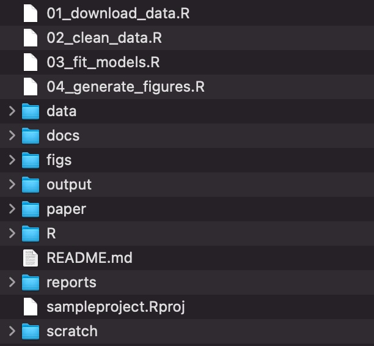

The pieces
Guiding principles
Reproducibility. You or another scientist should be able to repeat your analysis.
Maintainability. You should be able to jump back in to editing your analysis, even if you haven’t looked at it in a while.
Collaboration. You should be able to share your analysis methods and results with others.
Those principles sound nice, but how do we actually implement them in practice? You’ve probably been told to “comment your code”, but that’s insufficient guidance. Inspired by the British Ecological Society’s A Guide to Reproducible Code in Ecology and Evolution, this post walks you through the basics of setting up your project for success.
Use GitHub
The virtues of version control for scientists have been well covered by others (10.1371/journal.pcbi.1005510, 10.1080/00031305.2017.1399928). The core functionality of GitHub is version control, but there are even more reasons scientists should adopt it. I strongly recommend reading Braga et al. (2023) for more details. For now, I want to emphasize a feature I use all the time for collaboration: website hosting. Every GitHub repository gets an associated website, which you can combine with authoring tools like R Markdown and Quarto to easily share project reports. This is my primary method for sharing progress with collaborators and it’s so easy to do.
Pick a folder organization system
It’s less important which system you pick than it is to stick with it. I use the system recommended by Annna Krystalli in the Organising projects for reproducibility chapter of the BES guide, with a few edits. Some of the following comes from there verbatim.
The
datafolder contains all input data (and metadata) used in the analysis.The
paperfolder contains the manuscript.The
figsdirectory contains figures generated by the analysis.The
outputfolder contains any type of intermediate or output files (e.g. simulation outputs, models, processed datasets, etc.). You might separate this and also have a cleaned-data folder.The
Rdirectory contains R scripts with function definitions.The
reportsfolder contains Quarto files that document the analysis or report on results.The
docsfolder contains the rendered versions of the reports.The
scratchfolder contains early prototypes and other code I don’t fully understand.The scripts that actually do things are stored in the root directory, but if your project has many scripts, you might want to organize them in a directory of their own.

The biggest benefit of adopting this system is the cognitive space it frees up in your brain. Any brainpower you were devoting to figuring out where to put a file or where to find something can now be reallocated to your actual science.
As an added benefit, you’ll also do away with absolute path errors. If your code contains absolute file paths, like /Users/YourNameHere/Documents/MyThesis/…, then it won’t work on another machine. That violates reproducibility and makes collaboration difficult! This system keeps your analysis in one folder and uses RStudio projects, which means you’ll be using relative file paths. R will look for files relative to the .Rproj file, so e.g. data/surveys/forest.csv refers to the same file on any computer.
Raw data are sacrosanct
Never touch your raw data. Ever. Seriously. Smarter people than us say so (10.1080/00031305.2017.1375989). Put your raw data and all the metadata you need to use it in data/ and make any edits you need in code. You can save out the changed versions to output/. It might seem easier to open up Excel to add a column or change a cell. Don’t be tempted. Only madness lies down that path.
The workflow
- Create a repository for your project on GitHub
- Create an RStudio project from your repository
- Set up your folder structure
- Create a report
- Turn on website hosting in your GitHub repository
- Publish your report
That’s enough to get you started and will make your projects way easier to manage and share. But there’s also a lot more you can start taking advantage of once you get this workflow under your belt.
Turn your analyses into R packages. This makes your code way more reusable and helps track dependencies.
Write your manuscript in Quarto. In addition to HTML, Quarto can output to PDFs and Word documents. When you put your code directly into your manuscript, it becomes much easier to manage citations, cross-reference figures and tables, and make revisions.
Use more of GitHub’s project management features. If your projects start to include many more collaborators, Issues and Discussions will really help you keep track of decisions and edits. And the Fork-Pull Request workflow allows multiple people to edit code asynchronously.